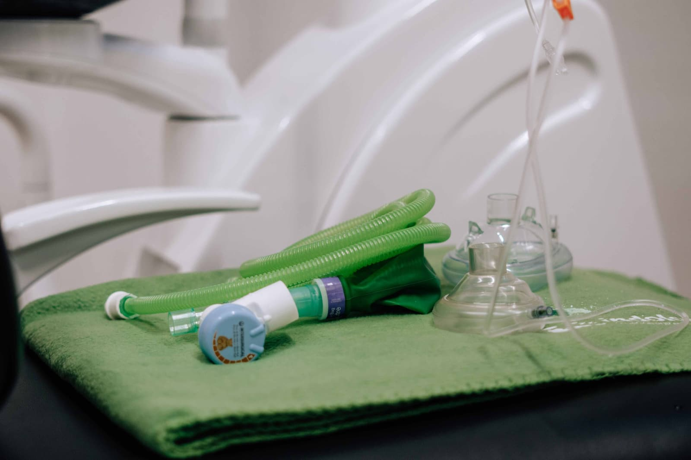

Sedación
Sedación consciente
«Aprovechamos los avances médicos: adiós miedos y fobias»

¿Qué es la sedación consciente?
La sedación consciente intravenosa es una técnica anestésica que complementa la anestesia local del dentista, proporcionando una sensación de relajación muy agradable, con un estado parecido al sueño. De esta forma desaparece la ansiedad y los miedos e incluso el paciente olvida, al finalizar el tratamiento, la mayoría del tiempo transcurrido. El paciente en todo momento es consciente, atiende a las órdenes y colabora con nuestro equipo.
La sedación actualmente es una técnica eficaz y segura para poder olvidar el miedo, la ansiedad y el dolor que pudieran provocar ciertas técnicas odontológicas. Actualmente su uso es muy común en otras especialidades, como por ejemplo en las endoscopias, y se ha extendido al sector dental por sus innumerables ventajas. Además de ser una técnica muy segura si se realiza con un equipo de anestesiólogos cualificados y los medios adecuados.
En nuestra clínica colabora una Sociedad Profesional compuesta por un equipo de Médicos Especialistas en Anestesiología y Reanimación con amplia experiencia trabajando en grandes hospitales de Madrid.
¿En qué pacientes está indicada?
La indicación de someterse a sedación consciente en el dentista, normalmente la propone el propio odontólogo, aunque como cada vez va siendo más habitual, algunos pacientes preguntan por ella generalmente por miedos o fobias.
Los casos más justificados para su utilización suelen ser:
- Cirugías largas o complicadas: en estos casos la sedación nos ofrece muchas ventajas durante el tratamiento y también después del mismo. Aumenta la colaboración del paciente, no hay sensación de cansancio, no hay sensación de la duración del tratamiento puesto que olvidará gran parte del proceso, no hay miedos ni ansiedad… Pero también nos ofrece ventajas para después del tratamiento ya que podremos administrar por vía intravenosa los antibióticos, antiinflamatorios, corticoides, y analgésicos según la necesidad individual del paciente y del tipo de intervención.
- Pacientes con fobia al dentista: esos pacientes con miedos, fobias o con ansiedad, que no pueden someterse ni siquiera a tratamientos de odontología general. Malas experiencias anteriores, mal enfoque o planificación de sus tratamientos en el pasado… todo eso puede desaparecer bajo una leve sedación consciente.
- Pacientes no colaboradores: como puede ocurrir en algunos casos de Autismo, Síndrome de Down, pacientes especiales que no son capaces de colaborar por sí mismos o de permanecer quietos. Les ayuda a tranquilizarse, estar calmados, cooperar, estar concentrados y más quietos.
¿Cómo se hace?
Una vez decidamos cual es el diagnóstico óptimo para tu caso, contrataremos los servicios del equipo médico de Anestesiología y Reanimación.
El primer paso es realizarte un cuestionario de salud que será evaluado por un médico anestesiólogo. En este estudio se considerarán la medicación que estés tomando (si la hubiera) y los informes médicos previos. Una vez estudiado te daremos más información sobre el proceso para que estés tranquilo y lo comprendas, y nos tendrás que firmar un consentimiento informado para realizar la sedación.
Tienes que estar en ayunas 8 horas antes del procedimiento.
Durante todo el proceso estarás monitorizado y vigilado por el equipo. Te canalizaremos una vena en el dorso de la mano por la que administramos la medicación necesaria para conseguir ese efecto de relajación que buscamos. Después el odontólogo te administrará la anestesia local en la zona como en cualquier otra intervención. Te aplicaremos oxígeno en el caso necesario. Así mismo, y esto es otra de las grandes ventajas del método, podemos en los casos necesarios, administrar tratamiento médico antibiótico, analgésico y antiinflamatorio de forma intravenosa siendo así de gran efectividad.
Una vez finalizado el tratamiento del odontólogo, permanecerás en la clínica descansando hasta tu completa recuperación. Este proceso depende de cada persona pero es un proceso agradable de entre 20-30 minutos. Después aunque podrás tener algo de sueño residual, saldrás totalmente consciente y caminando. No obstante, debes venir acompañado.
¿Cómo se valora al paciente?
Una vez explicado el protocolo básico al paciente y éste acepta la sedación, se requiere una valoración preanestésica.
El anestesista se pondrá en contacto telefónico con el paciente la semana anterior a la intervención para realizar una valoración médica, explicar de nuevo el procedimiento de la sedación y resolver las dudas que tenga el paciente.
Al valorar al paciente decidimos si son necesarias otro tipo de pruebas complementarias como analíticas, electrocardiogramas… Normalmente NO son necesarias, y si lo fuera, se lo indicará el anestesista.
Los pacientes con enfermedades severas o reagudizaciones importantes pueden presentar mayor riesgo para la sedación y evaluaremos personalmente si son aptos para la sedación consciente en clínica dental.
Te enviaremos a tu correo electrónico o te daremos personalmente en la clínica, los siguientes documentos:
- Cuestionario preanestésico.
- Consentimiento informado.
- Instrucciones para el paciente.
Necesitaremos que leas y firmes el cuestionario preanestésico y el consentimiento informado y los entregues el día de la intervención.
Es importante respetar el ayuno de sólidos de 8 horas previas a la intervención. Te puedes tomar la medicación (antibióticos…) con un poco de agua. Se recomienda mantener la medicación hipertensiva y/o suspender los antidiabéticos orales o la insulina mientras se esté en ayunas.
Te daremos de alta de la clínica acompañado, con las constantes estables, sin náuseas, ni dolor, ni sangrado, ni deambulando, después de media hora de finalizar el tratamiento dental.
Al día siguiente volveremos a ponernos en contacto contigo para conocer el estado general y tu grado de satisfacción con el procedimiento realizado. Así mismo dispondrás de un teléfono de urgencias para cualquier necesidad que tengas.
Instrucciones: antes, el día y después de la sedación
Estas son algunas de las instrucciones que deberás seguir, antes de la sedación:
- Rellena el cuestionario preanestésico.
- Lee detenidamente el consentimiento informado y fírmalo.
- Apunta tus dudas para consultarlas con el anestesista.
- No comer nada desde 8 horas antes de la intervención. Sólo podrás tomar agua hasta máximo 3 horas antes.
- Si hay cualquier cambio de salud antes de su intervención (aunque sea un constipado) o estuvira embarazada, notificanoslo lo antes posible.
El día de la sedación:
- Recuerda que debes estar en ayunas. Si eres diabético no tomes la medicación/insulina mientras estés en ayunas.
- Si tienes que tomar alguna otra medicación (antibióticos…) hazlo con un poco de agua. Si tienes medicación para la hipertensión, debes tomarla.
- No lleves esmalte de uñas, y lleva ropa cómoda.
- Recuerda que debes traer:
- El cuestionario preanestésico relleno, con la lista de tu medicación habitual.
- El consentimiento informado firmado.
- Último informe médico, análisis y electrocardiograma (si es tu caso).
- Tarjeta de la Seguridad Social o seguro médico.
Después de la sedación:
- Puedes volver a tu domicilio acompañado de un adulto.
- Puedes retirar el apósito de la vía venosa al llegar a casa.
- No debes conducir, operar maquinaria ni hacer actividades de riesgo.
- No tomes bebidas alcohólicas.
- Suspende la lactancia materna 24 horas.
Si el procedimiento dental lo permite, puede comenzar a beber con normalidad después de su salida de la clínica.
También te daremos instrucciones sobre la medicación que debes seguir tomando en casa.
Tendrás a tu disposición un teléfono de urgencias para cualquier duda que te pueda surgir.
Recomendaciones generales
Aparte de las instrucciones que te entregamos por escrito ya mencionadas en el punto anterior, a nivel más general te recordamos lo siguiente.
Para poder realizar la sedación con las máximas garantías de seguridad es imprescindible mantener un ayuno de 3 horas para líquidos claros (agua y bebidas isotónicas) y de 8 horas para alimentos y otro tipo de líquidos (leche, zumos). Si incumples ese punto debemos suspender el tratamiento.
Debes acudir acompañado de un adulto que se responsabilize del traslado a tu domicilio una vez terminado el procedimiento. Te recomendamos no conducir en las 12 horas siguientes. Si tienes o has tenido enfermedades, debes indicarnos cuales y traer algún informe médico. También debes hacer una lista de los medicamentos que tomes normalmente. No dejes de tomar tu medicación salvo que se te indique expresamente.
Una vez terminado el procedimiento, debes permanecer en la clínica hasta que el anestesiólogo confirme que puedes irte a tu domicilio. Puedes comenzar a beber con normalidad dos horas después del procedimiento. Te recomendamos no beber alcohol hasta 24 horas después
Tipo de cuestionario preanestésico
A continuación te damos un ejemplo de las preguntas que debes saber contestar en el cuestionario preanestésico:
- Datos personales: nombre, apellidos, DNI, fecha nacimiento, peso, teléfono, dirección, código postal.
- Datos de persona de contacto: nombre, apellidos, DNI, teléfono.
- ¿Padeces alguna enfermedad actual?
- ¿Tienes algún tipo de alergia?
- ¿Te han operado alguna vez?
- ¿Has tenido problemas con la anestesia (dental u otras)?
- Escribe los medicamentos que estás tomando.
- ¿Tienes la tension alta?, ¿palpitaciones?, ¿lesiones de corazón (infarto, angina, soplo)?, ¿llevas marcapasos?
- ¿Fumas?, ¿cuántos cigariilos?
- ¿Toses habitualmente?
- ¿Tienes bronquitis, asma o pitos en el pecho?
- ¿Tienes apneas de sueño?
- ¿Has tenido algún problema de riñón?
- ¿Has tenido hepatitis u otra enfermad del hígado?
- ¿Bebes alcohol habitualmente?
- ¿Tienes problemas de tiroides?
- ¿Tienes diabetes?
- ¿Has tenido algín problema neurológico?
- ¿Has tenido pérdidas de conocimiento?
- ¿Tienes algún problema reumatológico (artritis, etc.).
- ¿Sangras fácilmente por nariz, encías o heridas?
- ¿Tomas Sintrom, Adiro, Plavix u otros medicamentos para la circulación sanguínea?
- ¿Estas embarazada o sospechas que puedas estarlo?
- ¿Tienes actualmente alguna enfermedad infecciosa (hepatitis, SIDA…)?
Te daremos uno muy similar en papel para que lo leas detenidamente y nos lo traigas relleno y firmado el día de la intervención. Son protocolos médicos básicos comunes a muchos tipos de tratamientos.